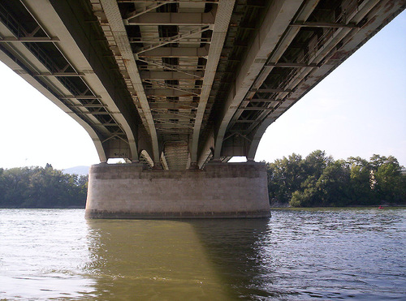

Árpád-híd
Az Árpád híd Budapest egyik közúti Duna-hídja Budapest III. kerülete és Budapest XIII. kerülete között.
Ma a híd Budapest legforgalmasabb hídja, naponta mintegy 150 000 jármű halad át rajta.
A Megyeri híd 2008-as átadásáig a főváros leghosszabb hídja és legészakibb közúti hídja volt.
Egyik különlegessége, hogy az eredetileg átadott híd bővítését úgy oldották meg, hogy két oldalt egy-egy új hidat építettek mellé,
azaz az Árpád híd voltaképp három párhuzamos, egymással összekapcsolódó hídszerkezetből áll.
A pesti oldalon a híd közelében található az Árpád híd metróállomás, a 3-as metró egyik jelentős állomása,
valamint az Árpád hídi távolsági buszpályaudvar.
